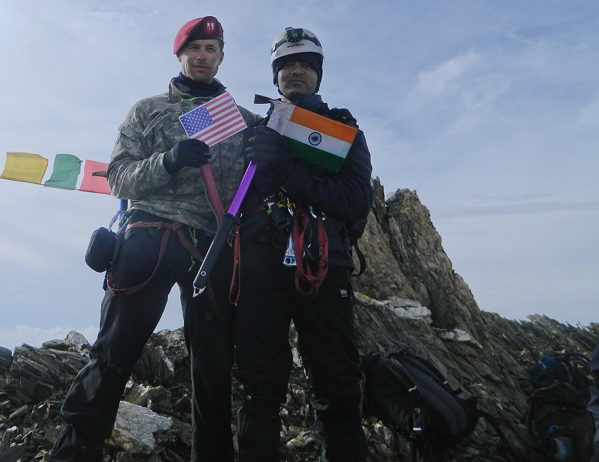
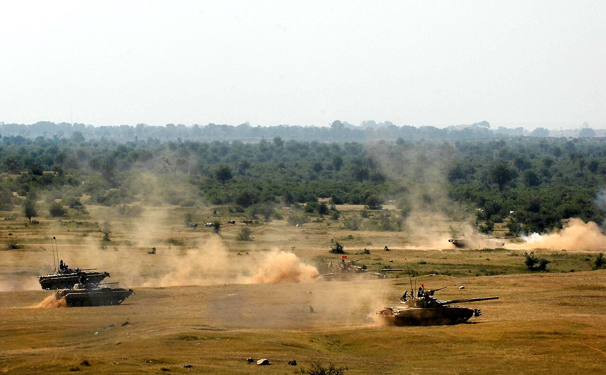

History · 2001–02
Operation Parakram: The War That Never Came

Not every act of soldiering happens in the roar of battle. Sometimes the hardest thing an army does is to stand fully armed at the border for months on end, ready to die at an hour's notice, for a war that may never be ordered. That was Operation Parakram.
My poem Unyielding Flames was written for exactly this kind of vigil: "No roar of guns, no sudden fray, yet the tension holds through night and day."
A nation pushed to the edge
On 13 December 2001, terrorists attacked the Parliament of India in New Delhi. In response, India launched Operation Parakram ("Valour") — the largest military mobilisation since the 1971 war, moving hundreds of thousands of troops and heavy equipment to the western border.[1]
For roughly ten months, through 2002, two nuclear-armed neighbours stood eyeball to eyeball. Full-scale war was, several times, only a decision away. And yet the order never came; the standoff was wound down by October 2002.[1]
Each breath we take, a promise sworn, to protect the land where heroes are born.
The courage of waiting

It is easy to imagine the bravery of an assault. It is harder to imagine the bravery of the wait — the soldier in a forward trench through a freezing night, every nerve taut, holding a line for a battle that keeps not arriving. Mines were laid; lives were lost in accidents and skirmishes even without a declared war. The strain was immense.
This is the paradox my poem turns over: "Peace is precious, a prize we hold dear, but its cost is paid in blood and fear." The soldiers of Operation Parakram paid that cost in patience and readiness, in a war measured not by victories but by the disaster they helped prevent.
Why the silence counts
We rarely build memorials to wars that did not happen. But deterrence — the quiet, exhausting work of being so ready that the enemy dares not begin — is one of the great unseen labours of an army. The men who stood through Operation Parakram defended the nation just as surely as those who storm a hill, and far less visibly.
"This is our watch, the vigil we keep," the poem says, "for the dreams of the nation, for the freedom we reap." Some guardians are remembered for the battles they won. These were the guardians of a battle that, thanks to them, never had to be fought.
Sources & further reading
- "Operation Parakram," Wikipedia.
- Indian Army, official records — indianarmy.nic.in.
All images via Wikimedia Commons, used under the licences shown in each caption.